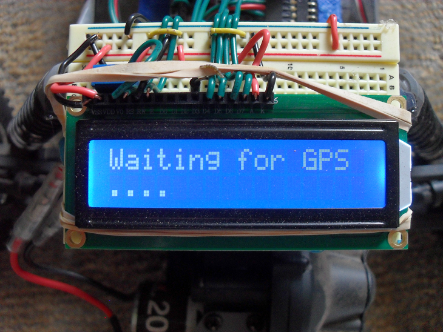
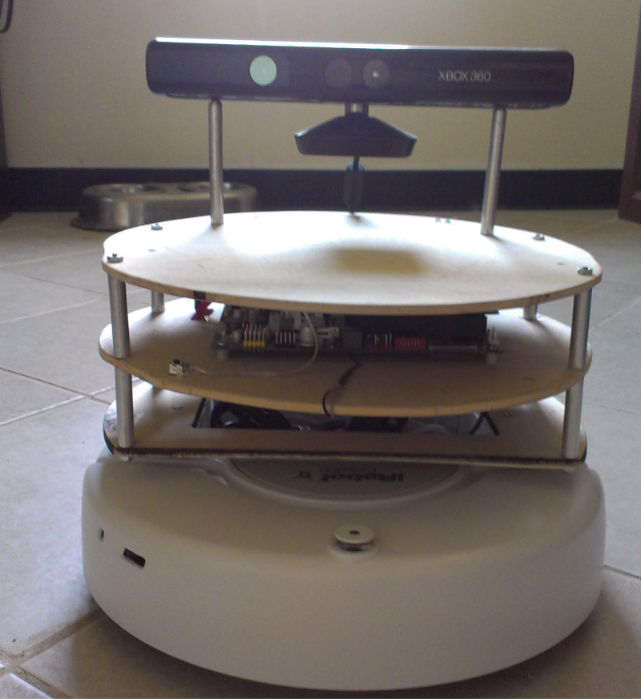

About me
Welcome to my personal site.
This site is my attempt to keep detailed notes on my personal projects and I like to help contribute that knowledge back to the open source community.
This site is my attempt to keep detailed notes on my personal projects and I like to help contribute that knowledge back to the open source community.
Some of my interests are in the application of computer vision and AI in robotics, and making contributions to open source hardware and software.
While you're here check out some of my projects:

The autonomous car project is my attempt to put together everything I had learned at the time about designing hardware and programming intelligent robots. The car uses a combination of GPS, gyroscope, and wheel sensors to determine position. It can successfully navigate itself through a set of given latitude/longitude coordinates. Second place winner of the 2013 Microchip design contest.

The turtlebot is a robotics testing platform I built for experimenting with computer vision and AI code. Some projects include: object tracking, line following, voice recognition, mapping and autonomous navigation.

The autonomous car IMU board is my open source hardware contribution. A custom designed and build PCB which was used to drive my autonomous car. The board features GPS, gyroscope, XBee radio, SD data logging, and build in hysteresis for wheel encoders.
The Orpheus music project is a web app similar to Spotify or Pandora but using the SoundCloud API. Users can sign up for accounts and a playlist is created for their favorite music genre. They can then search for and add new track to their playlist. Front-end of the site was built using jQuery and the back-end built using PHP and MySQLi.